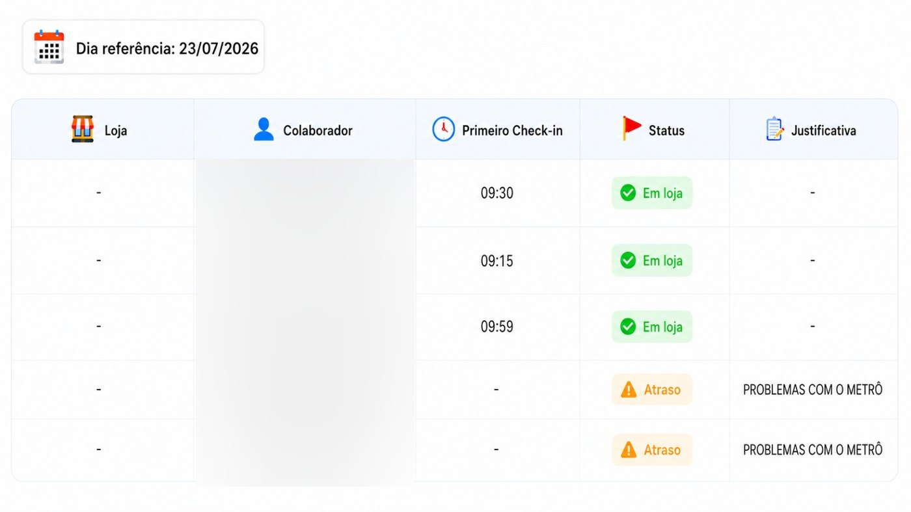
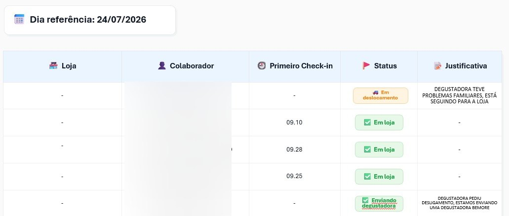
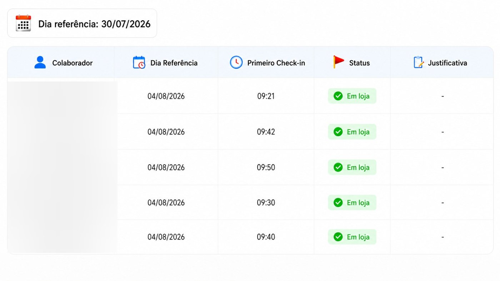
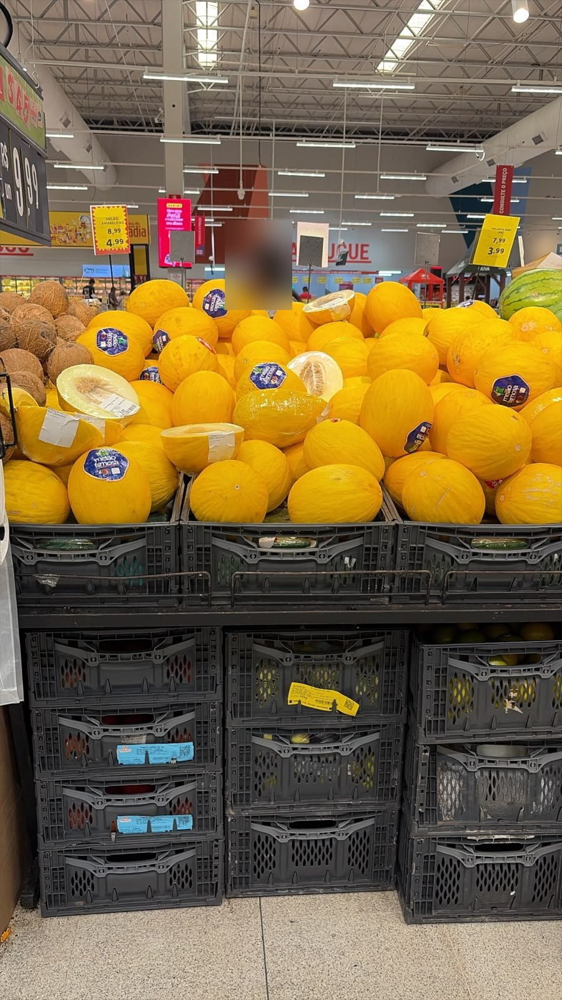
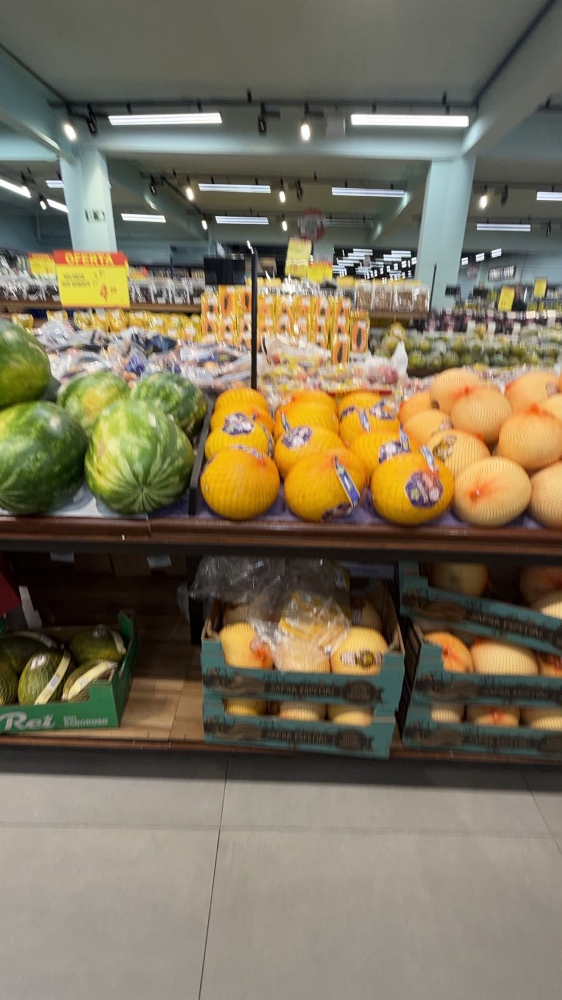
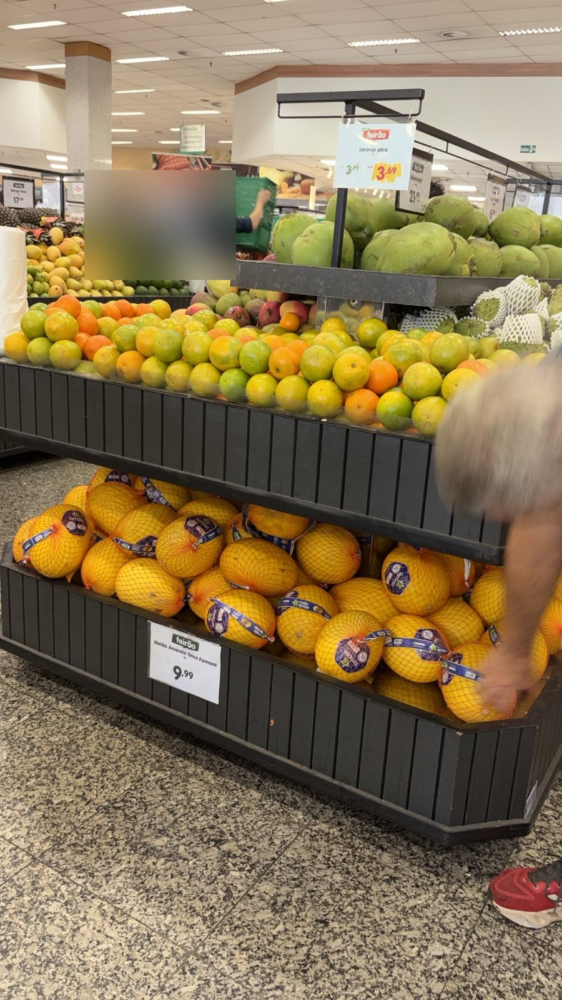
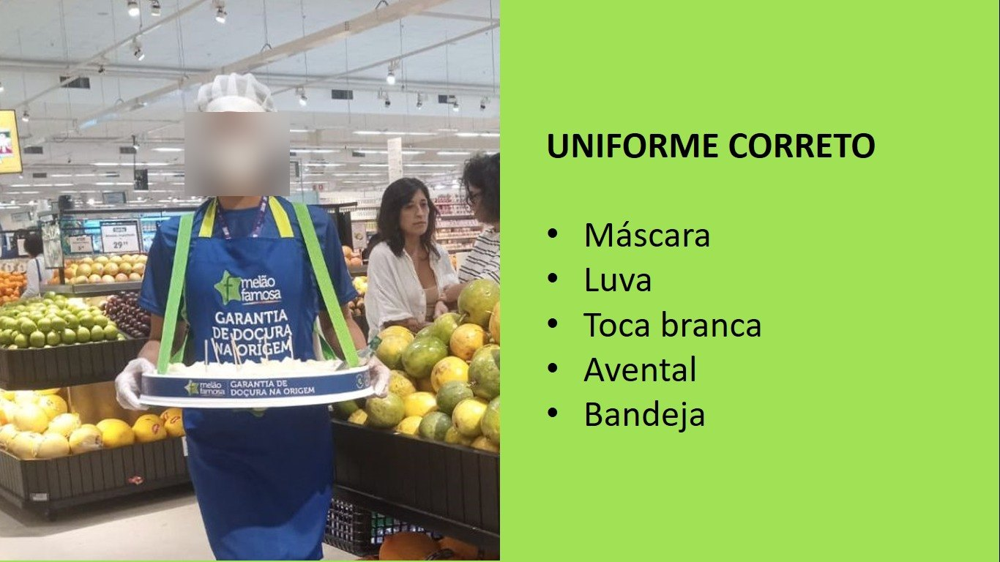
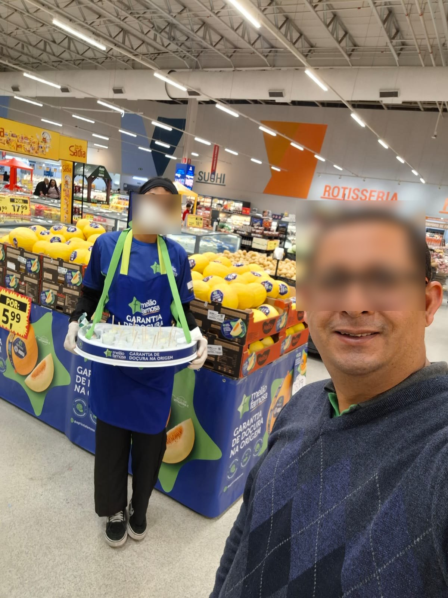
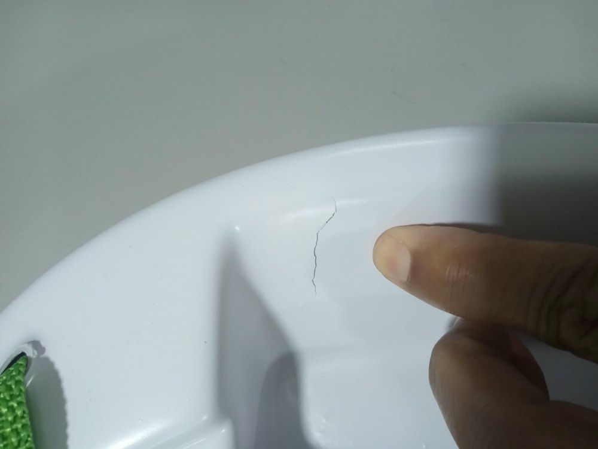

Apuração documental integral do piloto executado pela BeMore Action sob gestão da 75 LAB para a Agrícola Famosa. Este relatório consolida, com data, hora e autoria, todas as faltas, atrasos, abandonos de posto e falhas de reporte registradas ao longo da operação — e as confronta com o que a BeMore declarou em seus relatórios oficiais.
A operação não atingiu, em nenhuma semana do período, a cobertura contratada de 5 postos ativos das 09h às 18h. As falhas não foram pontuais nem majoritariamente externas: são recorrentes, concentradas na gestão de pessoas e de comunicação da BeMore, e — este é o ponto mais grave — não constam dos relatórios oficiais entregues ao cliente.
A 75 LAB absorveu o custo de mitigação: rotas presenciais de fiscalização, reposição de material em campo, gestão de crise com a diretoria da Agrícola Famosa e criação de um protocolo antifraude de comprovação de presença. Há fundamento contratual e factual para pleito de glosa e revisão do modelo antes da continuidade.
Todos os indicadores abaixo são extraídos de registros datados: mensagens do grupo oficial do projeto, Status Days emitidos pela própria BeMore e relatórios .xlsx entregues formalmente à 75 LAB.
Em ao menos 6 episódios a Agrícola Famosa constatou a falha em loja e comunicou a 75 LAB — e não o contrário. Em 22/07 a ausência de uma degustadora só chegou ao conhecimento da agência 7 horas depois, por ligação do cliente.
Foram necessárias rotas presenciais da 75 LAB para obter informação de campo. Em 3 de 3 rotas (23/07, 01/08 e 06/08) ao menos um PDV foi encontrado sem degustadora — em 01/08, três PDVs no mesmo dia.
Em 25/08 a 75 LAB instituiu uma “senha da semana” a ser exibida nas fotos diárias para atestar que o registro era do dia. É a evidência mais direta de que a comprovação de presença fornecida pela BeMore deixou de ser confiável.
Sem uma linha de base explícita não há falta a apurar. Os parâmetros abaixo constam do PMO de kick-off, do cronograma de treinamento e do contrato — todos anexos a este dossiê.
| Parâmetro | Pactuado | Fonte |
|---|---|---|
| Head count | 5 degustadoras em campo, 1 por PDV | Mensagem de boas-vindas do projeto (25/06) e PMO de kick-off |
| Jornada | 09h00 às 18h00, com 1 hora de almoço | PMO_KICK OFF_Agricola_Julho_26.xlsb — item 2.0 |
| Escala | Terça a sábado · 30 dias de ação · 1º dia de treinamento presencial | PMO de kick-off e mensagem de abertura do grupo |
| Roteiro final | Sonda Água Branca · Carrefour Imigrantes · Vila das Frutas (Cerro Corá) · Extra Ricardo Jafet · Sonda Vila Guilherme | Listagem oficial 20/07, revisada em 28/07 |
| Uniforme padrão | Máscara · Luva · Touca branca · Avental Melão Famosa · Bandeja | Slide “Uniforme correto” enviado pela 75 LAB em 23/07 |
| Insumos fornecidos | 6 bandejas · 11 aventais · 26 camisas · 20 toucas · 2.200 palitos · 12 faixas · 10 eco-bags · 5 facas · 2 caixas de máscara · 1 caixa de luvas | Inventário de Materiais assinado pela BeMore em 17/07 |
| Treinamento | 21/07, presencial, com módulos de conduta (RH BeMore) e de sistema (Operação) | Cronograma_Treinamento_Agricola_Famosa_BeMore_21-07-2026.pdf |
| Reporte de ausências | Até as 10h do dia, por exigência formal do cliente em 22/07 | Mensagem do cliente reproduzida no grupo |
| Anormalidades | Ciência “imediata e por escrito” ao contratante | Contrato — Cláusula Quinta, alínea “b” |
Em 26/06/2026, antes da assinatura, a 75 LAB solicitou formalmente a inclusão de cláusula de substituição de profissionais e SLA operacional: “em caso de ausência, atraso, conduta inadequada ou solicitação justificada da 75LAB, a Bemore deverá providenciar substituição em prazo compatível com a operação, sem custo adicional quando a necessidade decorrer de falha da equipe alocada”. A minuta em anexo não contém a cláusula. O risco antecipado pela agência materializou-se integralmente — e sem SLA nem multa, a operação ficou sem mecanismo automático de correção.
Cada item traz o fato apurado e a citação literal do registro de origem, com autoria, data e hora exatas conforme o export do grupo oficial do projeto. Use os filtros para isolar faltas, atrasos, abandono de posto ou apenas as ocorrências críticas.
Imagens extraídas do grupo oficial do projeto, na data e hora indicadas. Nomes completos, números de telefone e rostos de colaboradoras foram tarjados por proteção de dados — os elementos probatórios (horários, status, PDV vazio, uniforme, texto das mensagens) permanecem íntegros. Clique para ampliar.

Documento da própria BeMore. Duas degustadoras sem qualquer check-in e três com entrada às 09h15, 09h30 e 09h59 — todas após o horário contratual de 09h. Justificativa única para as duas ausências: “problemas com o metrô”.

Às 10h28, apenas 3 dos 5 postos com check-in confirmado. Um posto em deslocamento e outro em processo de substituição por desistência — a primeira das quatro do projeto.

Check-ins às 09h21, 09h30, 09h40, 09h42 e 09h50: nenhuma degustadora no horário, e todas classificadas como “Em loja” sem justificativa. O cabeçalho informa 30/07 enquanto as linhas registram 04/08 — o próprio instrumento de controle é inconsistente.

Registro feito pela 75 LAB durante visita presencial. Ponto de melão montado e abastecido, sem nenhuma profissional em operação. Minutos antes, a BeMore havia reportado normalidade.

Rota de auditoria conduzida pela 75 LAB acompanhada do supervisor da Agrícola Famosa. A degustadora chegou às 11h25 — 2h25 após o horário contratual.

Três tentativas de cobertura falharam em sequência no mesmo dia: a titular não foi, a primeira substituta não conseguiu ir e a segunda desistiu de última hora. O posto só foi coberto após as 13h20.
O próprio cliente permaneceu uma hora na loja sem localizar a degustadora — a loja chegou a chamá-la no alto-falante. A explicação da BeMore (almoço fora de escala e celular descarregado) só chegou na manhã seguinte, 15 horas depois do fato e em desacordo com a exigência de reporte até as 10h.
Mensagens das próprias degustadoras encaminhadas ao grupo de gestão: salário não creditado e a constatação de que “sexta passada somente uma menina foi ao local de trabalho” — 4 dos 5 postos descobertos em um único dia.

Máscara, luva, touca branca, avental Melão Famosa e bandeja. Enviado pela 75 LAB ao grupo com a instrução expressa “este é o padrão, favor comunicarem”.

Um dia após a comunicação do padrão, degustadora em operação de manipulação de alimentos com bandana escura no lugar da touca branca. A reposição foi resolvida orientando a colaboradora a comprar em farmácia, sem os três orçamentos exigidos pelo contrato.
Segunda semana consecutiva de falha de pagamento — vale-transporte em 21/08 e salário em 28/08. Obrigação exclusiva da BeMore como única empregadora (Cláusula Sétima, §1º), com impacto direto no comparecimento em loja.

Bandeja de degustação com trinca estrutural, encontrada em loja no início do expediente. Item de contato com alimento, sem controle de conservação ao longo do período.
O dossiê inclui 9 arquivos de áudio do grupo oficial, entre eles as manifestações do cliente nos dias mais críticos: 06/08 às 10h25 e 11h39 (dia da visita da diretoria da Agrícola Famosa, com o PDV de abertura vazio às 09h46), 14/08 às 15h15, 16h00 e 16h54 (ausência da degustadora no dia da gravação institucional) e 01/09 às 14h53. Os arquivos originais estão preservados no export e devem ser reproduzidos diretamente em qualquer tratativa formal.
Este é o achado central da auditoria. Os relatórios que a BeMore entregou formalmente — e que foram apresentados ao cliente — não refletem a operação executada. A categoria “Falta / ausência” aparece zerada em todas as versões, e a base de atendimentos repete invariavelmente cinco linhas “09:00 às 18:00 — Realizada”.
| Relatório entregue | Período | Intercorrências declaradas | Faltas declaradas |
Ocorrências apuradas | Observação da auditoria |
|---|
Somadas, as três entregas declaram 17 intercorrências. A auditoria documentou 61 no mesmo período, todas com registro datado no grupo oficial em que a própria BeMore participa.
Nos quatro arquivos, a aba de atendimentos traz sempre as mesmas 5 linhas com “09:00 / 18:00 / Realizada”, inclusive nos dias em que há prova fotográfica de PDV vazio e relato do gerente da loja atestando ausência.
A ausência integral de 22/07 no Extra Ricardo Jafet — 8 horas de posto descoberto, descoberta pelo cliente — foi lançada na base como “Atraso / deslocamento”, e não como falta. É o que mantém o indicador de faltas em zero.
A 75 LAB apresentou ao cliente, de boa-fé, relatórios que não correspondiam ao que a Agrícola Famosa constatava nas próprias lojas. Isso transferiu para a agência o desgaste de reputação de uma falha de execução de terceiro — exatamente o ponto levantado pela diretoria em 01/08: “o cliente está me colocando e colocando a 75 em check de todo o trabalho que estamos fazendo por conta das degustadoras”.
Confronto entre as obrigações assumidas na minuta contratual em anexo e os fatos apurados. Serve de base jurídica para o pleito de glosa e para as condições de continuidade.
Consolidação do impacto mensurável, cenários de glosa e a leitura de risco para a decisão sobre a continuidade da operação no mês 2.
| Origem | Dias-degustadora |
|---|---|
| Faltas integrais confirmadas (22/07 Extra RJ · 22-23/07 Vila das Frutas · 01/08 Sonda VG · 21/08 e 28/08, 4 postos cada) | 12 |
| Postos encontrados vazios por cliente ou 75 LAB, sem cobertura comprovada (23/07 · 28/07 · 01/08 · 25/08) | 4 |
| Equivalente em atrasos — 28 min/dia sobre jornada de 8h, aplicados aos 134 dias cobertos | 8 |
| Total de impacto mensurável | 24 |
| Escopo contratado (30 dias × 5 postos) | 150 |
Ainda que não convertidos em dias-degustadora, os itens abaixo integram o pleito por representarem custo real absorvido pela 75 LAB ou dano de relacionamento com o contratante final:
O valor do contrato não consta da minuta em anexo (campo em branco na Cláusula Terceira). Informe o valor mensal efetivamente contratado para os 5 postos e o simulador aplica os cenários apurados sobre a base de 150 dias-degustadora.
Valor-dia por degustadora: — · Acrescer ao pleito o ressarcimento de R$ 177,43 em materiais aprovados sem os três orçamentos previstos na Cláusula Quarta, “b”. Recomendação da auditoria: abrir a negociação no cenário pleno e fechar não abaixo do cenário documentado.
A operação foi prorrogada por mais um mês por decisão do cliente, apoiada na confiança no modelo. Essa prorrogação não deve ser executada sob as mesmas regras — os oito pontos abaixo são as condições mínimas para que o mês 2 não repita o mês 1.
Formalizar a cláusula solicitada em 26/06 e não incluída: prazo máximo de reposição de posto descoberto (sugestão: 3 horas), sem custo adicional quando a causa for falha da equipe alocada, com multa progressiva por posto/dia não coberto.
Antes de qualquer novo faturamentoAcionar a Cláusula Sétima, §5º: exigir comprovantes de pagamento de salário e vale-transporte das 5 degustadoras como anexo obrigatório da nota fiscal. Duas semanas consecutivas de inadimplência já geraram ausência coletiva em loja.
ImediatoA exigência do cliente existe desde 22/07 e nunca foi cumprida de forma consistente. Converter em obrigação contratual, com glosa automática do dia quando a 75 LAB souber da ausência por terceiros.
Antes do reinícioSubstituir a aba genérica “09:00 / 18:00 / Realizada” por extrato do sistema Involves com check-in, check-out, geolocalização e intervalo, por degustadora e por dia. Sem esse extrato, o relatório não é aceito como comprovação.
Primeiro relatório do mês 2A “senha da semana” instituída em 25/08 funciona e deve virar cláusula: foto no PDV até as 10h, com senha do dia visível. Ausência da foto equivale a ausência do posto até prova em contrário.
Vigente — formalizarExigir 2 degustadoras reservas treinadas e cadastradas nas lojas. Em 01/08 três tentativas de reposição falharam em sequência, e em 01/09 a substituta foi barrada por falta de liberação prévia — ambos evitáveis com reserva pré-habilitada.
Antes do reinícioNenhum reembolso de material adquirido em campo sem aprovação prévia por escrito e três orçamentos, conforme Cláusula Quarta, “b”. Rever os R$ 177,43 já repassados sob esse critério.
ImediatoReunião semanal de 30 minutos com quatro indicadores: cobertura de postos (%), pontualidade de entrada (%), ausências reportadas até as 10h (%) e rupturas de produto. Sem indicador fechado, a discussão volta a ser caso a caso — que é o modelo que falhou.
Semanal, a partir do reinícioReunião formal com a BeMore, com este dossiê apresentado como peça única, cobrindo: (1) reconhecimento das ocorrências, (2) pleito de glosa no cenário pleno, (3) assinatura do aditivo com SLA antes do mês 2 e (4) plano de correção com prazos. Registrar a ata por e-mail no mesmo dia.
Caso o aditivo com SLA e a comprovação trabalhista não sejam aceitos, a recomendação é não renovar. A exposição da 75 LAB perante a Agrícola Famosa já alcançou o nível de diretoria, e a operação vinha sendo sustentada por fiscalização presencial da própria agência — um modelo que não escala para o roll-out.
Todos os arquivos abaixo integram o export original do grupo oficial do projeto e permanecem preservados como prova. Este relatório não altera, recorta ou reinterpreta nenhum deles — apenas os organiza cronologicamente.
(dado pessoal — não publicado)